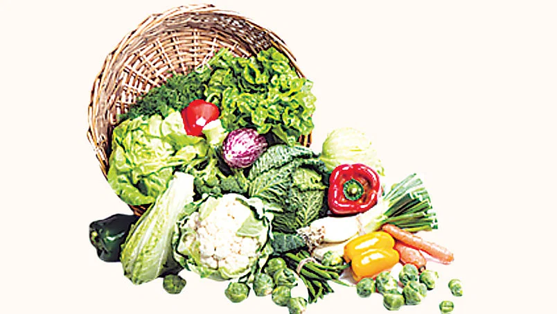

রক্তে বিলিরুবিনের মাত্রা বেড়ে গেলে প্রস্রাবের রং, চোখের শ্বেতমণ্ডল বা স্ক্লেরা, ত্বক ও মুখের ভেতর হলুদ দেখায়। এই পরিস্থিতিকে আমরা জন্ডিস বলে জানি। যকৃৎ বা পিত্তনালির কোনো সমস্যা দেখা দিলেই জন্ডিস হয়ে থাকে সাধারণত। রক্তের বিলিরুবিনের মাত্রা এ সময় ৩ মিলিগ্রাম বা ডেসিলিটারের চেয়ে বেশি হয়ে যায়।
জন্ডিস কেন হয়
মূলত তিনটি কারণে জন্ডিস দেখা দেয়। এক. হেপাটাইটিস বা যকৃতের প্রদাহ। দুই.
পিত্তনালির ব্লক বা পিত্তরসের পথে বাধা। তিন. হিমোলাইসিস বা সময়ের আগেই রক্তের
লোহিত রক্তকণিকার ভেঙে যাওয়া। হেপাটাইটিসের অন্যতম কারণ নানা রকম ভাইরাস।
হেপাটাইটিস এ, বি, সি, ডি ও ই ভাইরাসের নাম আমরা কমবেশি জানি। হেপাটাইটিস
এ এবং ই দূষিত পানি ও খাবারের মাধ্যমে দেহে প্রবেশ করে। অন্যদিকে বি এবং সি
সাধারণত রক্তের মাধ্যমে আর অনিরাপদ যৌনসংসর্গের মাধ্যমে ছড়ায়। এই ভাইরাসগুলো
ছাড়াও বিপাকজনিত কিছু সমস্যায়, অ্যালকোহল সেবন বা অটোইমিউন কিছু রোগে যকৃতের
প্রদাহ হতে পারে।
যেভাবে বুঝবেন জন্ডিস হয়েছে
জন্ডিসের সাধারণ উপসর্গ হলো চোখ ও প্রস্রাবের রং হলদে হয়ে যাওয়া। ত্বক বা মুখের
ভেতরও হলুদ দেখায়। এ ছাড়া অরুচি, ক্ষুধামান্দ্য, বমি বমি ভাব বা বমি, অবসাদ,
জ্বর জ্বর ভাব, কখনো পেটব্যথাও হতে পারে। কখনো চুলকানি হতে পারে। এমনটা হলে
রক্তে বিলিরুবিনের মাত্রা, লিভারের এনজাইমগুলো পরীক্ষা করলেই জন্ডিস হয়েছে বোঝা
যায়। তবে এই জন্ডিসের কারণ কি, তা জানার জন্য ভাইরাস পরীক্ষা করা দরকার।
গ্রামগঞ্জে ‘মেটে জন্ডিস’ নামে একটা শব্দ চালু আছে। কোনো কারণে খাওয়ায় অরুচি
দেখা দিলেই মানুষ ধরে নেয় যে জন্ডিস হয়েছে। নানা ধরনের ঝাড়ফুঁক, তাবিজ–কবচ
নেওয়া শুরু হয়ে যায় তখন। আসলে মেটে জন্ডিস বলে কিছু নেই।
কী করবেন
কী করবেন না
কখন হাসপাতালে যাবেন অধিকাংশ জন্ডিসের রোগী বিশ্রাম ও পুষ্টিকর খাবারেই সেরে যাবেন। তবে সময় লাগবে। কিন্তু কিছু কিছু জটিলতা দেখা দিলে হাসপাতালে ভর্তি হওয়ার দরকার পড়তে পারে। যদি রোগীর বিলিরুবিনের মাত্রা অত্যধিক বেড়ে যায়, রোগী মুখে কিছুই খেতে না পারে বা অতিরিক্ত বমি হতে থাকে, রোগীর আনুষঙ্গিক অন্যান্য সমস্যা যেমন অনিয়ন্ত্রিত ডায়াবেটিস বা কিডনি রোগ ইত্যাদি থাকে, যদি জন্ডিস আক্রান্ত রোগী গর্ভবতী থাকেন বা রোগী অসংলগ্ন আচরণ করতে শুরু করেন।
আপডেট: ০৯ এপ্রিল ২০২৪, ০১:৩২
মুলা, বিট, গাজর, টমেটো, ব্রকলি, ফুলকপি, বাঁধাকপি ও পালংশাক জন্ডিস রোগীর জন্য খুব ভালো
জন্ডিস মানে যকৃতের প্রদাহ বা হেপাটাইটিস। এটি আসলে কোনো রোগ নয়, রোগের লক্ষণ। জন্ডিস হলে রোগীর পথ্য কী হবে, তা নিয়ে অনেকের ভেতর অনেক ভ্রান্তি রয়েছে, যার কোনো ভিত্তি নেই। জন্ডিস হলে এমন খাবার খাওয়া উচিত, যাতে যকৃৎ কিংবা পিত্তথলির ওপর কোনো চাপ না পড়ে। অল্প করে একটু পরপর সঠিক খাবার খেলে এবং পূর্ণ বিশ্রামে থাকলে এমনিতেই জন্ডিস সেরে যায়।
জন্ডিস হলে যা খাবেন:
গোটা শস্য: কার্বোহাইড্রেটের চাহিদা পূরণে বাদামি চাল, রুটি, ওট্স খেতে পারেন।
গোটা শস্যে প্রচুর আঁশ, ভিটামিন থাকে, যা ক্ষতিকর টক্সিন বের করে দেয়।
প্রোটিন: খাদ্যতালিকায় প্রতিদিন মাছ, মুরগির মাংস, ডাল পরিমাণমতো থাকতে হবে। না হলে রোগী দুর্বল হয়ে পড়বে। অনেকে মনে করেন, জন্ডিসে আক্রান্ত রোগী মাছ-মাংসজাতীয় খাবার খেতে পারবেন না। এটা আসলে ভুল ধারণা।
সবজি: মিষ্টিকুমড়া, মিষ্টি আলু, মুলা, বিট, গাজর, টমেটো, ব্রকলি, ফুলকপি, বাঁধাকপি ও পালংশাক জন্ডিস রোগীর জন্য খুব ভালো।
ফল: বেরিস, পেঁপে, তরমুজ, আনারস, পাকা আম, কলা, কমলা, জলপাই, অ্যাভোকাডো, আঙুরের মতো সহজপাচ্য ফল প্রতিদিনের খাদ্যতালিকায় থাকতে হবে।
দুগ্ধজাতীয় খাবার: জন্ডিস হলে ফুল ক্রিম দুধ বা দই, পনির খাওয়া ঠিক নয়। এতে স্যাচুরেটেড ফ্যাট বেশি থাকে, যা যকৃতের জন্য ক্ষতিকর।
অ্যান্টি-অক্সিডেন্টযুক্ত খাবার: লেবু, বাতাবি লেবুর শরবত জন্ডিস রোগীর জন্য খুবই ভালো। এগুলো শরীরে পানির চাহিদা পূরণের পাশাপাশি রোগ প্রতিরোধ ক্ষমতা বাড়ায়। এ ছাড়া প্রতিদিন বাদামও পরিমাণমতো খেতে পারেন। সামান্য আদা কুচি বা রসুন কুচি, আদার রস বা আদা-চা খাওয়া যেতে পারে দিনে দু-একবার। এগুলো যকৃতের জন্য ভালো।
পানি: প্রতিদিন পর্যাপ্ত পরিমাণ পানি (দৈনিক অন্তত আট গ্লাস) পান করতে হবে। তবে অতিরিক্ত পানি পানের প্রয়োজন নেই। পানি শরীর থেকে ক্ষতিকর টক্সিন বের করে দেয়। আখের রস, ডাবের পানিও শরীরে পানির চাহিদা পূরণ করে। তবে রাস্তার পাশের আখের শরবত না পান করে ঘরে তৈরি শরবত খেতে হবে।
যা খাওয়া যাবে না:
চিনি বা অতিরিক্ত মিষ্টিজাতীয় খাবার, কাঁচা লবণ, অতিরিক্ত তেল-মসলাযুক্ত খাবার,
রেড মিট (গরু, মহিষ, ছাগলের মাংস), অ্যালকোহল, ট্রান্স ফ্যাট ও স্যাচুরেটেড
ফ্যাটযুক্ত খাবার খাওয়া যাবে না।